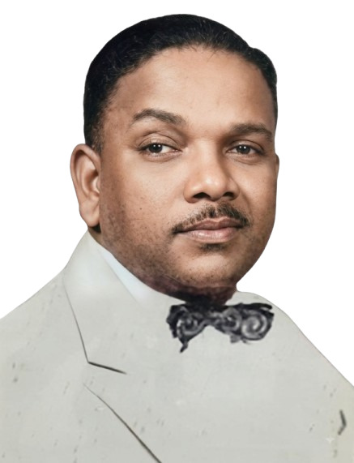

Profile at a Glance
Qualification
G.M.V.C., M.S. (Kansas)
Position
Former Professor and Head,
Department of Surgery,
Madras Veterinary College
Area of Contribution
Veterinary Surgery
Dr. Frank Devasagayaraj Wilson
G.M.V.C., M.S. (Kansas)
Former Professor and Head
Department of Surgery
Madras Veterinary College
Early Life and Veterinary Heritage
Dr. Frank Devasagayaraj Wilson, son of Dr. Appadurai J. Wilson, was born on 9 October 1919.
Interestingly, his father, Dr. A. J. Wilson, was also a veterinarian and served as the Chief Veterinary Surgeon for the Madras Presidency, which then included Madras, Andhra, Mysore and Malabar.
Advanced Training in Veterinary Surgery
Dr. F. D. Wilson graduated from Madras Veterinary College and was conferred the G.M.V.C. — Graduate of Madras Veterinary College.
During 1959–1960, he was deputed to the United States under a programme of the Agency for International Development of the Government of the United States of America, in cooperation with other governments.
He successfully participated in a technical cooperation programme in the field of surgery and was conferred the degree of Master of Science by Kansas State University of Agriculture and Allied Science in 1960.
A Courageous and Accomplished Surgeon
Dr. Wilson was remembered by his former students as a brave and confident surgeon who performed operations on a wide variety of animal species, both large and small.
Many of the surgical procedures of that period were performed after anaesthetising animals with a combination of magnesium sulphate and chloral hydrate administered intravenously.
His surgical confidence and practical ability left a lasting impression on generations of veterinary students and field veterinarians.
Discipline in Surgical Training
As a teacher of surgery, Dr. Wilson insisted on discipline and professional appearance among students. He expected them to wear white shoes and keep their fingernails closely trimmed.
He was also considered an effective teacher and trainer who ensured that students acquired practical surgical skills through training on live animals, in keeping with the methods of veterinary education prevalent during that period.
His contemporaries included Dr. Ratan Singh, Head of Veterinary Surgery at Pantnagar Veterinary College, and Dr. Hattangadi, Head of Veterinary Surgery at Bombay Veterinary College.
The three were remembered in the source reminiscence as the “Fathers of Live Animal Veterinary Surgery” because of their emphasis on practical surgical training using live animals.
A Message on His Table
A memorable paperweight displayed prominently on Dr. Wilson's table carried a message that many of his students continued to remember:
IF YOU WANT TO BE SEEN — STAND UP
IF YOU WANT TO BE HEARD — SPEAK UP
IF YOU WANT TO BE APPRECIATED — SHUT UP
“Frankie Willie”
An interesting recollection associated with Dr. Wilson concerns the last Madras City Police horse that he certified for the Madras State Police Department.
The mare, which came from the Madras Race Course stables, was named “Frankie Willie”.
A Popular Hostel Warden
Dr. Wilson also served as Warden of the Men's Hostel at Madras Veterinary College.
He was popular among the students and encouraged many hostel inmates to take up boxing.
He privately engaged a boxing trainer for himself and subsequently trained interested students in the hostel.
He also personally supervised the initiation of fresh entrants to hostel life during the late 1950s, at a time when practices and regulations concerning student initiation were very different from those of the present day.
A Formidable Administrator
During his service as Deputy Director of Animal Husbandry, Dr. Wilson acquired a reputation for direct and forceful administration.
One recollection concerns a surprise inspection of a veterinary dispensary in southern Tamil Nadu, where a livestock assistant was reportedly refusing to comply with the official instructions of the veterinarian.
Dr. Wilson confronted the situation in his characteristic stern manner and made it unmistakably clear that insubordination would not be tolerated. The incident became one of the colourful stories later recounted by colleagues about his formidable personality.
The “Surgeon Man with a Cigar”
Dr. Wilson was fondly and reverently remembered by many as the “surgeon man with a cigar.”
He performed gelding procedures in the open quadrangle in an area presently located near the Dr. M. S. Srinivasalu Block of Madras Veterinary College.
During his tenure as Professor of Surgery, veterinarians working in the field were mentored with enthusiasm and encouraged to develop confidence and competence in surgical procedures.
Surgery for the Benefit of Farmers
Dr. Wilson encouraged field veterinarians working in rural areas to improve their surgical skills so that livestock owners and farmers could benefit directly from better veterinary care.
Chronic Luxation of the Patella (CLP) was frequently observed in Kangayam cattle. To address this condition, he pioneered a minor surgical procedure that became widely adopted during his period.
A Tough Exterior and a Kind Heart
Despite his tough outward appearance, Dr. Wilson was remembered as a kind-hearted person who helped many people both officially and benevolently.
His strictness was accompanied by a genuine desire to see his students and junior veterinarians develop professional confidence and competence.
Academic and Administrative Service
Dr. Wilson headed the Department of Surgery, Madras Veterinary College, from 1958 to 1967.
He also served as an Emeritus Scientist and subsequently retired as Regional Joint Director of the Animal Husbandry Department in Madras.
A Teacher Who Created Surgeons
Dr. Wilson was one of the popular teachers and surgeons of Madras Veterinary College.
Many of his former students who received surgical training under him went on to become accomplished surgeons and respected teachers of Veterinary Surgery in veterinary colleges across India.
His former students continued to recollect their association with him with admiration and affection.
Recognition by the Surgical Fraternity
The Indian Society for Veterinary Surgery honoured Dr. Wilson as an Honorary Member in recognition of his contribution to the surgical fraternity of the veterinary profession.
An Enduring Legacy
Dr. Frank Devasagayaraj Wilson lived to the age of 73 years and passed away on 15 August 1992.
His portrait can be seen alongside those of other former Heads of Department in the corridor of the present Department of Veterinary Surgery and Radiology, Madras Veterinary College.
Dr. Wilson's passion for Veterinary Surgery and his determination to enable younger veterinarians to excel in surgical practice will continue to be remembered in the annals of Veterinary Surgery in India.
Prepared by Dr. T. N. Ganesh and Dr. B. Ramesh Kumar, with inputs from Dr. N. N. Balasubramanian, Dr. Bertram Jayachandran Dare, Dr. K. S. Palaniswami and other surgeons.
Audio narration will be added here when available.
Additional historical photographs will be added here.